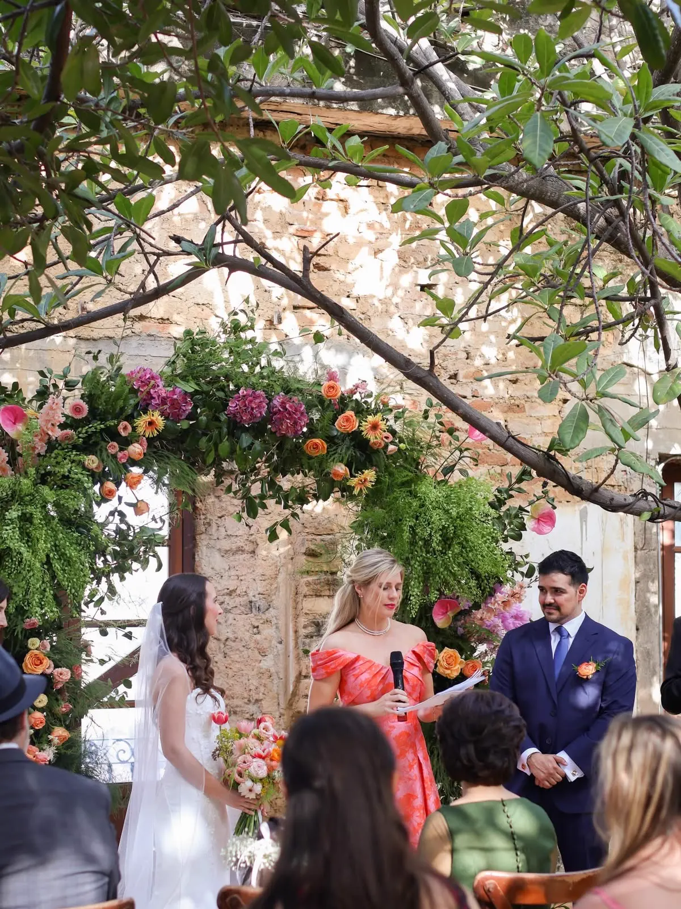
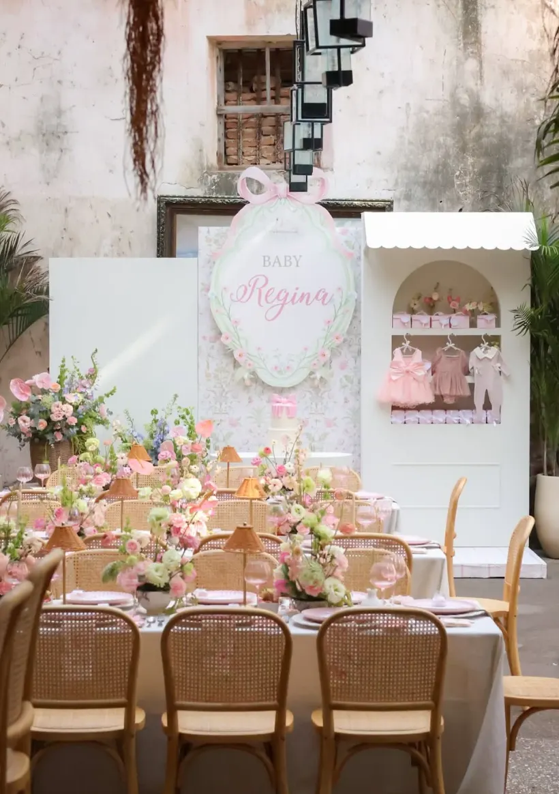
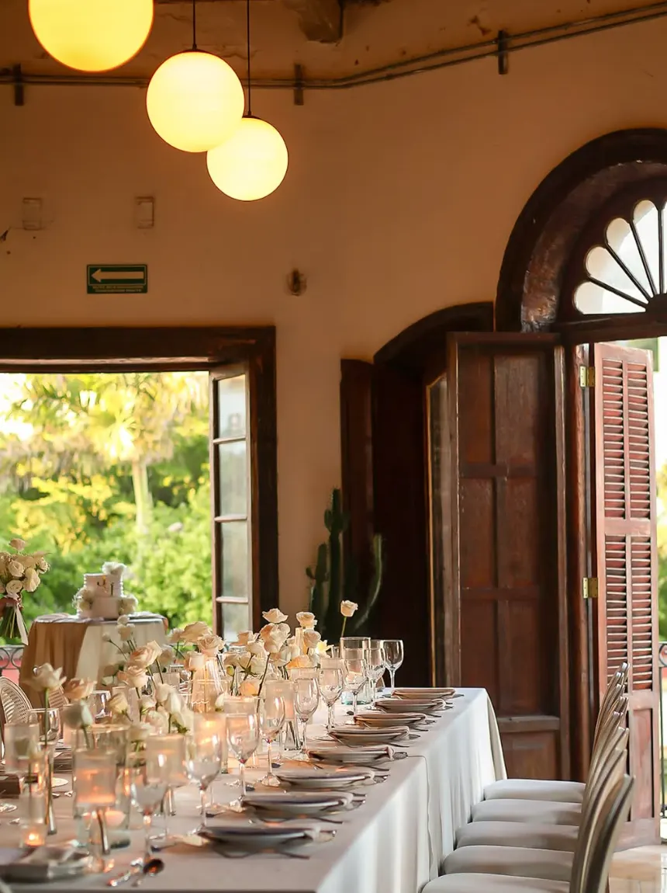
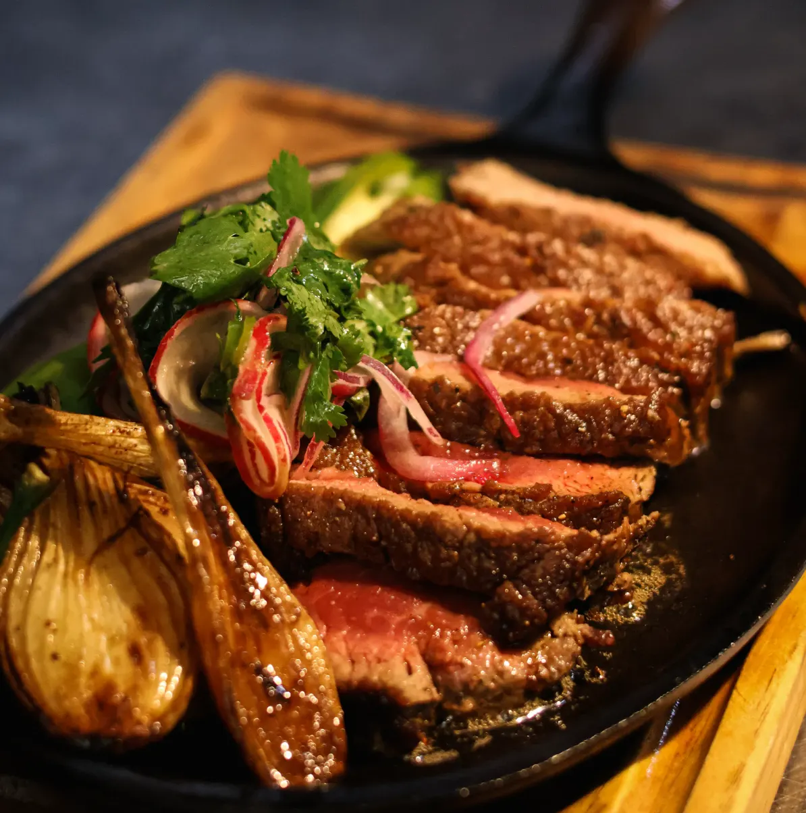

Casona en el Centro Histórico de Mazatlán
Pásale.
Tu fiesta ya tiene casa.
Un patio con un árbol centenario, muros de ladrillo antiguo, terraza al atardecer y la cocina de Presidio. Bodas, baby showers, pedidas y comidas que se alargan hasta que se prenden los focos.
El patio del árbol
Recorre la casa
Cuatro espacios, cada uno con su luz. Elige uno y asómate.

Un árbol viejísimo da sombra a todo el patio. De día la luz se cuela entre las hojas; de noche se encienden las series de focos colgadas de sus ramas.
Aquí caben la ceremonia, la mesa de los novios y la pista sin que nadie tenga que moverse de lugar.
Ideal para bodas, ceremonias civiles y comidas largas al aire libre.

Muros de ladrillo con siglos encima, faroles de herrería y un techo de vidrio que deja pasar la luz sin el sol de mediodía.
Las paredes sin restaurar son parte del encanto: cualquier montaje, del más sencillo al más producido, luce contra ellas.
Ideal para baby showers, bautizos y cumpleaños de día.
Arriba, entre las azoteas del Centro, la tarde se pone dorada. Es el lugar para el brindis justo antes de que se meta el sol.
Perfecta para grupos que buscan intimidad: una cena de aniversario, una pedida o la comida de los más cercanos.
Ideal para pedidas de mano, cenas íntimas y cócteles al atardecer.

Techos altos, puertas de madera de dos hojas y un medio punto que abre hacia el jardín. Adentro se está fresco aunque afuera haga calor de Mazatlán.
La opción segura para temporada de lluvias o para quien prefiere un evento bajo techo sin renunciar a la vista.
Ideal para cenas formales, eventos de empresa y plan B en días de lluvia.
¿Qué vamos a celebrar?
Pasa el cursor o toca cada foto.
-
Bodas
Ceremonia bajo el árbol, cena en el patio y fiesta hasta tarde, todo sin cambiar de lugar.
-
Baby showers
Mesas largas, flores y luz de día. Tú eliges la temática; nosotros el montaje y el menú.
-
Pedidas y cenas románticas
Preparamos la sorpresa: flores, velas y una mesa solo para dos. Tú solo llega.
-
Comidas familiares
Cumpleaños, bautizos y reuniones de domingo con comida mexicana hecha en casa.
-
Eventos de empresa
Cenas de fin de año, lanzamientos y comidas de equipo en un lugar que sí se recuerda.

La cocina de Presidio, en tu mesa
El menú de tu evento sale de la misma cocina que atiende el restaurante todos los días.
Lo armamos contigo, platillo por platillo, y lo ajustamos hasta que quede como lo imaginaste.
- Tiempos y platillos
- Bebidas y brindis
- Menú para niños
- Opciones sin carne
Así armamos tu evento
Nos escribes
Qué celebras, la fecha y cuántos invitados esperas.
Conoces la casa
Recorres los espacios y eliges dónde se ve mejor tu evento.
Cerramos la propuesta
Menú, bebidas, montaje y decoración en una sola cotización.
Llegas a disfrutar
Nosotros nos encargamos de todo. Tú recibe a tus invitados.
- Dirección
- Niños Héroes 1511, Col. Centro, Mazatlán, Sinaloa
- WhatsApp de eventos
- 669 155 0358
- Reservaciones del restaurante
- 669 223 1021
Agenda una visita
Ven a conocer la casa antes de decidir. Llena esto y te abrimos WhatsApp con el mensaje listo; solo tienes que enviarlo.